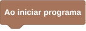
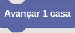
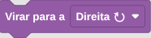
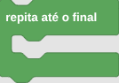
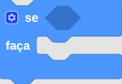

❓ Ajuda
Como começar
Para executar seu primeiro código, perceba que tem um menu na direita da sua tela onde tem "Editor" escrito no topo, terá uma caixa de ferramentas com um bloco "Avançar 1 casa", tente arrastar ele para encaixá-lo no bloco "Ao iniciar programa", clique em "Rodar Solução", e veja o jogador andar!
Como programar JavaScript
Para começar a programar JS, repare que no menu de edição, terá no topo da tela um quadrado laranja escrito "BL", ele quer dizer BLockly, que é o seu modo atual de programação, se você clicar nele, ele irá ficar amarelo escrito JS, e irá aparecer o editor de código no lugar do editor de blocos, clique de novo para voltar ao blockly.
O que esperar para o futuro do Maze JS
Para o futuro, já foi pensado adicionar pequenas coisas como modo escuro, mais tipos de linguagens de exibição do Blockly além de JS e PY, mais linguagens além de apenas JS, mais blocos para o blockly, uma variedade grande de fases, corrigir pequenos erros de gramática entre outras features que irão expandir o conteúdo do jogo.
É possível aconteçer acidentes com a execução JS?
Desde que o jogo não seja modificado ou tenha scripts injetados, não, o código usa um Worker seguro que executa o JS de forma separada do site com funções filtradas sem acesso a funções externas/padrões do js/node js.
É importante notar que o jogo foi feito para computadores, e não para celulares e/ou tablets.
💻 API de Comandos JavaScript
Estes são os comandos de texto que os jogadores utilizam para controlar o robô diretamente no editor de código.
advance()
Avança uma posição para frente na direção atual em que o robô está virado.
advance();rotate_right()
Gira o robô 90 graus para a direita (sentido horário).
rotate_right();rotate_left()
Gira o robô 90 graus para a esquerda (sentido anti-horário).
rotate_left();rotate_halfTurn()
Faz o robô dar uma meia volta completa (gira 180 graus).
rotate_halfTurn();did_not_reach_the_end()
Retorna um valor booleano (true ou false). Útil para criar loops até
que o objetivo seja cumprido.
while (did_not_reach_the_end()) {
advance();
}path_is_clear(direction)
Verifica se o caminho está livre de obstáculos na direção informada. Retorna true se
estiver livre.
Parâmetros aceitos: 'front', 'right',
'left', 'back'.
if (path_is_clear('front')) {
advance();
} else {
rotate_right();
}🧩 Blocos customizados (Blockly)
Para quem joga no modo visual, estes são os blocos customizados do MazeJS:
| Visual do Bloco | Tipo / Identificador | Descrição / Tooltip |
|---|---|---|
 |
start_block |
Ao iniciar programa: O código deve começar aqui. Coloque seus comandos dentro ou abaixo dele. O robô começará a leitura por este bloco. |
 |
move_advance |
Avançar 1 casa: Faz o robô andar uma casa para a frente na direção atual. |
 |
rotate_player |
Virar para a [Direção]: Permite selecionar através de um menu se o robô deve virar para a Direita ⟳, Esquerda ⟲ ou dar Meia volta 🔄. |
 |
repeat_until_end |
Repita até o final: Executa todos os blocos internos em loop contínuo até que o robô pise no bloco de Saída do labirinto. |
check_path |
Caminho livre a [Direção]: Bloco condicional que verifica se há um caminho seguro na direção escolhida (frente, trás, direita, esquerda). Retorna verdadeiro ou falso. | |
 |
controls_if |
Se [Condição] fazer: Bloco condicional que verifica se uma condição é verdadeira ou falsa para executar um código relacionado. |
controls_repeat |
Repetir [Quantidade] vezes: Executa um código várias vezes seguidas. |
👌 Práticas de organização
No blockly não existe organização, oque o usuário precisa é passar o nível com a quantidade de blocos correta, mas no JavaScript é diferente, pois não é sobre blocos, e sim sobre tempo de execução.
O motor de execução do JS tem uma lógica simples: se o código demorar 3+ segundos para responder entre um comando e outro, ele será interrompido, é difícil atingir este tempo, mas é sempre bom usar as práticas de organização.
Existem várias práticas boas que o programador pode inventar para resolver problemas e conseguir organização, mas é emprotante lembrar que antes de organizar qualquer coisa, você que ter algo que funciona, então o usuário pode evitar repetir comandos iguais, ao invés de:
advance();
advance();
advance();
advance();
Você pode criar uma função:
function andar2() {
advance();
advance();
}
andar2();
andar2();
//Ou até mesmo usar um loop inteligente:
function loop(times, code) {
for (let i = 0; i < times; i++) {
code();
}
}
loop(4, () => { advance() }); //executa "advance()" quatro vezes seguidas!
/*Melhor ainda! usar a referência da função, e let/const para definir uma variável,
um valor que pode ser usado dentro de vários lugares
(emportante: pode se usar let x = 10; x = 3 para sobreescrever,
mas o const não deixa isso por ser constante)*/
const times = 4;
loop(times, advance);
E muitas vezes pode parecer inútil, mas usar comentários é muito bom para organizar o código! dentre eles existe o comentário de linha, e o comentário de bloco, a diferença é que um ocupa uma linha com //texto, e o outro várias com /*texto*/, tudo que estiver dentro dos comentários será ignorado, veja um exemplo:
advance(); //O jogador avança para passar no cubo de gelo.
//O jogador vira para atravessar a curva.
rotate_right();
/*O jogador anda sem virar para a esquerda.
Se ele fosse para a esquerda ele iria bater em um espinho.*/
advance();
🧰 Programação de fases
O jogo tem um sistema de fases customizadas, para fazer a sua, você deve programar um arquivo Json, e dentro do jogo ir em configurações > Externo, selecione o botão (Carregar JSON) dentro da opção de nível costumizado e selecione sua fase.
A estrutura JSON deve seguir:
{
"name": "Nível customizado", //define o nome do nível
"initialMessage": "<p>Nível customizado!</p>", //define uma mensagem para a fase (opcional)
"blocksBlocked": ["repeat_until_end"], //define os blocos que não podem ser usados
"maxBlocks": 6, //define a quantidade máxima de blocos que podem ser usados (opcional)
"difficulty": "⭐⭐☆☆☆", //define uma string de dificuldade
"width": 9, //define a largura do nível para o jogo saber como usar o Array
"layout": [
"N", "N", "N", "N", "N", "N", "N", "N", "N", "N",
"#", "P", ".", ".", ".", ".", ".", "N", "N", "N",
"#", "#", "#", "#", "#", "#", ".", "N", "N", "N",
"#", { "special": "S", "id": 1 }, ".", ".", ".", ".", ".", { "special": "D", "id": 2 }, "E", "N",
"#", "#", "#", "#", "#", "#", { "special": "D", "id": 1 }, "N", "N", "N",
"#", ".", ".", { "special": "B", "opens": 2 }, { "special": "S", "id": 1 }, ".", ".", "N", "N", "N",
"N", "N", "N", "N", "N", "N", "N", "N", "N", "N"
]
}
importante:
- Não use os comentários // no seu arquivo Json! os navegadores não suportam isso
- É recomendado usar estrelas na string de dificuldade pois o jogo decora o texto com elas; Para copiar: ☆⭐🌟✨
- É recomendado usar o vscode para validar a sintaxe do arquivo
- Note que no atributo layout tem algumas letras, e alguns Objetos dentro de chaves, eles
funcionam de uma forma bem básica:
Os blocos simples são aqueles que são escritos entre "" separados por vírgula, dentre eles, tem os tipos:- "." -> Ele equivale ao chão seguro que o jogador pode atravessar.
- "N" -> Nada, se o jogador chegar lá ele morre.
- "P" -> É o spawn do jogador, ele define onde o jogador irá começar.
- "E" -> É o final da fase, se o jogador pisar, ele ganha.
- "#" -> É uma parede, funciona que nem o "N" só que com desenho.
- "T" -> É um espinho, se o jogador pisa ele morre.
- "I" -> Um pouco mais complicado, ele é um bloco de gelo, que serve para prolongar o caminho do jogador, por exemplo, se você tiver uma fila:
["P", "I", "I", "I", ".", "E"], basta usar um movimento de avançar, que você escorrega pelos 3 blocos de gelo e chega no "."!
Já os Blocos avançados, são blocos nos quais você pode interagir, dentre eles tem os tipos:
{ "special": "S", "id": 1 }-> Esse bloco é um switch, ele é simples, você conecta ele com um "id", que será exatamente o mesmo "id" de uma porta, e ao pisar, ele abre, mas ao pisar novamente ele fecha a porta.{ "special": "B", "opens": 2}-> Esse bloco é um botão, ele funciona exatamente igual a um switch, a diferença é que ele só pode abrir a porta 1 uma vez, ele nunca mais pode ser apertado, e no lugar do "id", ele usa "opens" que também segue o "id" de uma porta.{"special": "D", "id": 3 }-> Esse bloco é uma porta, ela é fechada e atua como uma parede "#", mas ao conectar um Switch/Botão com o mesmo id dela, ela pode ser aberta e atuar como chão "."